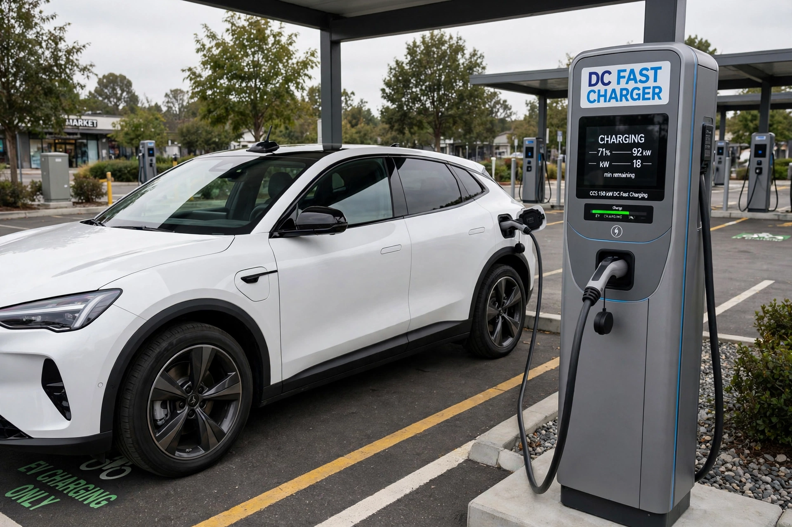

Electric vehicle
From Wikipedia, the free encyclopedia

An EV at a DC fast charger.An electric vehicle (EV) is a vehicle that uses electric motors for propulsion, powered by a rechargeable battery pack (BEV), a hydrogen fuel cell (FCEV), or overhead wires. Electric cars outsold expectations in the 2010s–2020s: led by China, global EV sales passed 17 million in 2024 (over 20% of new cars). Pioneers included the Nissan Leaf (2010) and Tesla\'s models, which made long-range EVs mainstream.
History
Electric cars were popular around 1900 — quiet and easy to start — before cheap petrol and the electric starter favoured combustion. The 1990s GM EV1 and California mandates previewed the modern era; the lithium-ion battery, falling from over $1,000/kWh to under $150/kWh in a decade, made mass-market EVs viable.
Technology
EVs use one or more motors (often induction or permanent-magnet), single-speed gearing, regenerative braking and power electronics. Range, charging speed (DC fast charging at 150–350 kW) and battery chemistry (LFP vs NMC, emerging solid-state) are key differentiators, as is the charging network (Tesla\'s Superchargers, now opened to other brands in North America).
Market and debate
China dominates production and sales (BYD overtaking Tesla in BEV volume in late 2023 quarters), and Norway leads adoption (most new cars electric). Debates cover grid capacity, mineral supply chains, battery recycling, and lifecycle emissions — consistently lower than combustion cars on most grids in studies.